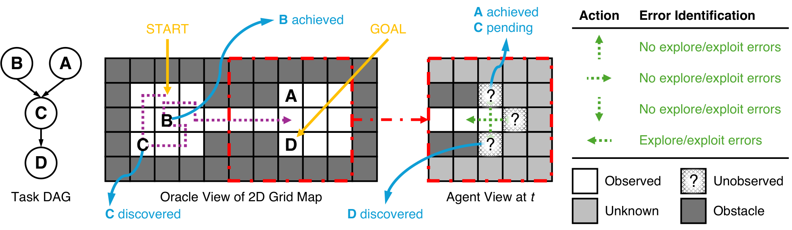
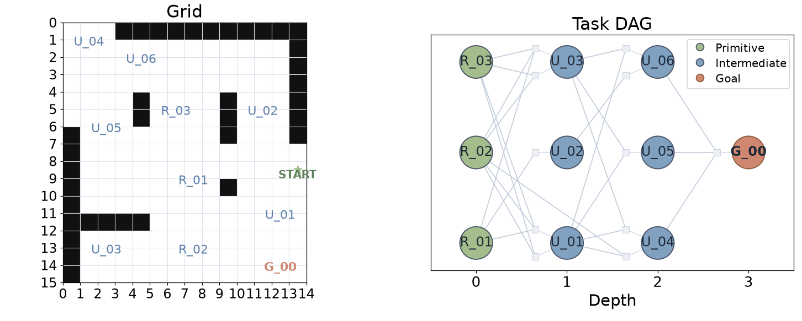
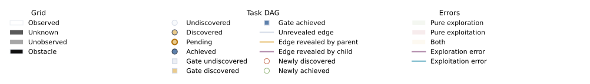

Extending our work on
“Exploration and Exploitation Errors Are Measurable for Language Model Agents”, we generate 250 diverse maps spanning five task difficulty levels and five exploration-demand levels, varying both the
complexity of the tasks and the effort required to discover them. We evaluate 29 open-source models with and without
reasoning outputs. Beyond task success rates, we measure
exploration and exploitation errors, budget use, and reasoning costs to examine how models discover useful information, act
on what they have learned, and spend resources along the way. Together, these evaluations show where agents struggle to explore and exploit,
and how reasoning changes their performance and resource use.
01 / SUMMARY
Four takeaways
02 / RESULTS
Beyond a single success rate
Successful agents can still explore inefficiently or misuse what they have learned. We measure exploration and exploitation errors alongside
task success, and verify that both errors are strongly correlated with task success.
Exploration error vs. success
Exploitation error vs. success
Relationship between task success and exploration error (left) or exploitation error (right). Dashed lines show ordinary least-squares
regressions of success rate on log₁₀ error rate, with each model weighted equally; R² reports the corresponding goodness of fit. DeepSeek V4
Flash and Qwen 3.6 27B are excluded from the reasoning-condition regression fits and R² calculations because their trajectories frequently
terminate at reasoning limits.
Leaderboard
Model leaderboard
#
Higher success is better; lower errors and lower budget use are better. Error rates pool counts across eligible steps. Budget on success
is the mean fraction of the available action budget used by successful runs. Note that low budget on success does not necessarily indicate
a better model: a model may succeed on only a few easy tasks and use little budget on those successes while failing on harder tasks. This
metric should therefore be interpreted alongside the overall success rate.
03 / ENVIRONMENT DESIGN
An agent moves through a 2D partially observable grid to discover task nodes, whose dependencies are modeled by directed acyclic graphs
(DAGs). The agent must explore the map to discover the task nodes and their dependency graph, then exploit the knowledge acquired through
past encounters to complete the tasks.

Task dependencies, partial observability, and action-level error identification in the grid environment, from
our paper. The agent discovers task nodes through exploration and uses
its accumulated knowledge to satisfy their prerequisites and reach the goal.
Two independent axes control difficulty: the area of the space to explore and the complexity of task dependencies. Open cells are
traversable; total cells include non-traversable cells (walls). Each task-DAG tier is crossed with five exploration levels and ten seeds.
Below are examples of the generated maps and task DAGs.
Five task-DAG difficulties · 50 maps per difficulty
Difficulty
Task nodes
Mean open cells
Open-cell range
Mean total cells

1 / 5
04 / QUALITATIVE ANALYSIS BEYOND SUCCESS
Two successful runs can show different behavior
Comparison of two successful runs on the same task
Model
Outcome
Steps
Exploration errors
Exploitation errors
HY3
Success
148
12
0
GPT-OSS-120B
Success
188
0
52
HY3 and GPT-OSS-120B both complete the task but their trajectories reveal different sources of error. HY3 finishes the task with
no exploitation errors while GPT-OSS-120B finishes with no exploration errors. Our metric reveals
differences in how models discover information and act on what they have learned beyond success.

01 / Success without exploitation errors
HY3 · default-exploration Hard DAG · High exploration
Goal discovered at step 48 → prerequisites resolved → goal activated at step 148.
Successful trajectories on the same map and task DAG under the default-exploration prompt. The animations show the agent’s observed grid,
discovered task dependencies, and cumulative errors after each action. HY3’s errors accumulate during exploration; GPT-OSS 120B’s errors
accumulate during exploitation. These runs illustrate why task success alone does not capture how efficiently an agent explores and uses
acquired knowledge.
Further Examples of Agent Behavior
The following three illustrations show additional patterns of agent behavior, from efficient task completion to budget exhaustion and
accumulating exploration and exploitation errors.
05 / ADDITIONAL ANALYSIS
Model size
We compare exploration and exploitation errors versus total parameter count, including inactive MoE experts.
Exploration error vs. model size
Exploitation error vs. model size
Exploration and exploitation errors as a function of total model parameters. Both axes use logarithmic scales. Dashed lines connect
Pareto-optimal models: no other model achieves an equal or lower error rate with an equal or smaller parameter count and a strict
improvement in at least one quantity. Parameter counts include inactive experts in mixture-of-experts models.
Token usage Reasoning only · 250
We compare exploration and exploitation errors with the average number of output tokens generated per agent turn, using
reasoning runs on 250 maps per model. For each model, we divide the total output tokens across these runs by the total number of recorded
turns. Output tokens include both the model’s reasoning and its visible action responses, including output from retries and the final
generation attempt when a limit is reached. Input tokens, including conversation history, are excluded. Requests rejected for exceeding
the context limit before generation contribute no output tokens.
Exploration error vs. output tokens
Exploitation error vs. output tokens
Exploration and exploitation errors as a function of mean generated output tokens per agent turn in the reasoning condition. Both axes use
logarithmic scales; dashed lines indicate the Pareto frontier across models with complete output-token accounting, minimizing error and
token cost jointly. For trajectories terminated by context or output limits, token totals include the final generation attempt, while
errors are measured only over observed actions. Low measured cost or error in these truncated trajectories therefore need not indicate
successful task completion.
Two types of budget failures
Budget failures during evaluation occur when an agent exhausts either its context window or its output-token budget before producing the
next action. We analyze reasoning runs on 250 maps per model.
Context limit: the conversation and prompt exceed the model’s context window. Reasoning traces accumulate across turns,
so excessive reasoning can exhaust this budget.
Output limit: reasoning exhausts the output-token budget before the model returns an action.
Model
Failure rate
Success rate excluding budget failures
Context failures
Output failures
CITATION
Citation
If you find this work useful, please cite our work:
@misc{park2026explo2bench,
title = {{(EXPLO)$^2$-Bench}: Scrutinizing Agent's Exploration
and Exploitation Errors Beyond Success},
author = {Park, Jaden and Kim, Jungtaek and Jeong, Jongwon
and Ghodsi, Mahdi and Lee, Yong Jae},
year = {2026},
date = {2026-11-08},
url = {https://jadenpark0.github.io/project_pages/explo-bench/}
}
@article{park2026exploration,
title={Exploration and Exploitation Errors Are Measurable for Language Model Agents},
author={Jaden Park and Jungtaek Kim and Jongwon Jeong and Robert D. Nowak and Kangwook Lee and Yong Jae Lee},
journal={arXiv preprint arXiv:2604.13151},
year={2026},
url={https://arxiv.org/abs/2604.13151}
}
Acknowledgements
This work was supported in part by NSF IIS2404180, National Research Foundation of Korea (NRF) grant (MSIT) (RS-2026-25522067) and Institute
of Information & communications Technology Planning& Evaluation (IITP) grants funded by the Korea government (MSIT) (No.
2022-0-00871, Development of AI Autonomy and Knowledge Enhancement for AI Agent Collaboration), (No. RS-2025-2543949. Environment-Aware and
Domain-Adaptive Multimodal Embodied AI for Real-World Interaction), and Electronics and Telecommunications Research Institute (ETRI) grant
(26CB1200, Development and Application of Science-Specialized Multimodal Foundation Models). Jungtaek Kim acknowledges support from the
start-up grant of the University of Arkansas. This work used computing resources made available through the AMD University Program (AUP) AI
& HPC Cluster. We thank AMD for providing AMD Instinct GPU compute resources through AMD Dev Cloud.